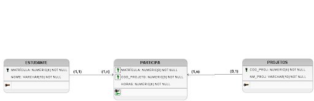
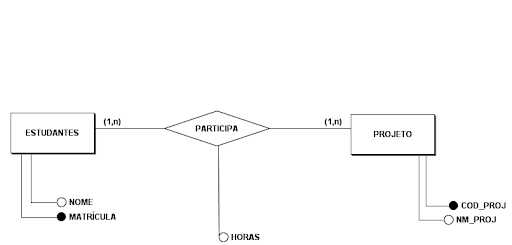
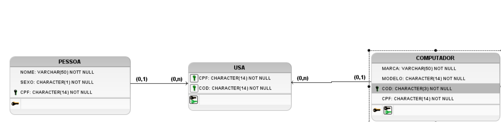

Banco de Dados
Um banco de dados é uma conglomerado de dados organizados e armazenados sobre um domínio específico. Essas informações podem ser acessadas e gerenciadas por meio de um sistema de gerenciamento de banco de dados (SGBD). Os bancos de dados servem como base para operações, tomada de decisões, segurança e consultas subsequentes dentro de organizações e instituições. Exemplos de bancos de dados incluem listas telefônicas, registros de clientes e inventários de produtos.
-O que é o MER?-
Modelo Entidade Relacionamento
MER é uma metodologia de modelagem de dados que descreve objetos (entidades do mundo real), seus atributos e as conexões entre eles. utilizado principalmente no design de tabelas de banco de dados, o MER facilita a visualização da estrutura dos dados e a compreensão de como as entidades estão conectadas no sistema. Inclui ideias como entidades, links e atributos que são usados para descrever com eficácia informações e relacionamentos assim como o DER, porém, mais complexos.
O que é DER?
Diagrama Entidade Relacioamennto
DER é um estilo visual que representa entidades (objetos do mundo real) e seus relacionamentos em formato de banco de dados. Emprega símbolos como retângulos para objetos, linhas para conexões e losangos para múltiplos atributos de valor, o que facilita a compreensão da estrutura e das interações dentro do sistema.
-Exemplo Visual-
-MER-

-Exemplo Visual-
-MER-
-Exemplo Visual-
-DER-

-MER-
-Modelo Entidade Relacionamento-

-Diagrama Entidade Relacionamento-
-DER-
imagem de outro DER